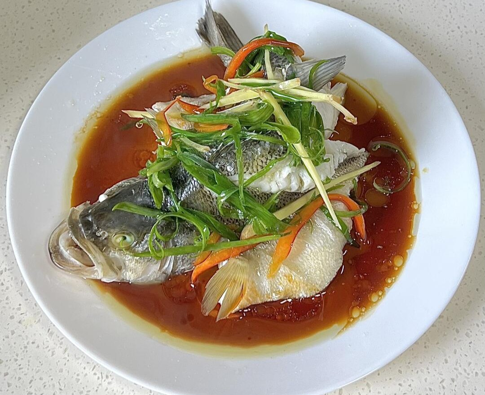

粤菜 · 广东
STEAMED SEA BASS
清蒸鲈鱼
鲜香 · 清淡
鲜鱼、姜葱、少量豉油，构成一盘清蒸鱼的主角。蒸汽让鱼肉保持水润，热油把葱姜香气带进酱汁。
- 参考用时
- 约 25 分钟
- 参考份量
- 2—3 人份
- 烹饪方式
- 蒸

BEHIND THE DISH
关于这道菜
清蒸鱼常见于粤菜餐桌，鱼的品种可随当地供应变化。这里选用鲈鱼，采用豉油、葱姜和热油收尾的家常做法，以突出鱼肉本身的鲜味。
准备食材
2—3 人份| 食材 | 用量 |
|---|---|
| 鲈鱼 | 1 条，约 600 克 |
| 生姜 | 20 克 |
| 小葱 | 3 根 |
| 蒸鱼豉油 | 25 毫升 |
| 料酒 | 10 毫升 |
| 食用油 | 15 毫升 |
调味准备
蒸鱼豉油沿盘边加入，咸度较高时可兑少量热水。葱姜分成两份：一份垫底蒸鱼，一份切细丝用于出锅后提香。
一步一步做
家常版本 · 5 个步骤处理鱼身
鱼去鳞、去鳃和内脏，洗净腹内残血后擦干，在较厚部位浅划两刀。抹少量料酒，放上姜片。
垫盘与烧水
盘底垫葱段和姜片，把鱼放上去。蒸锅加足水，大火烧开后再放入鱼盘。
蒸至熟透
盖盖大火蒸约 10—12 分钟，再按鱼的大小补足时间。鱼肉最厚处应熟透并容易分离，不能只按固定分钟数出锅。
更换葱姜
取出鱼盘，倒去蒸出的汁水，移去旧葱姜，在鱼上铺新的葱姜细丝，沿盘边淋入豉油。
热油提香
小锅中加热食用油，关火后淋在葱姜丝上，趁热上桌。端取鱼盘时注意蒸汽和盘子的温度。
用时为估计值，食材大小、锅具和火力都会影响实际时间；以主料熟透、口感合适为准。